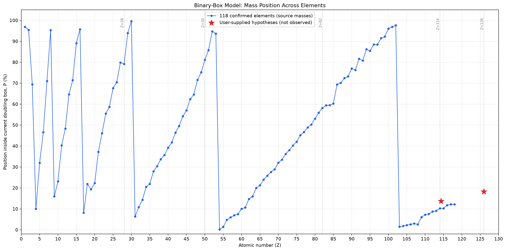

BRICK = 0.016. Formula: n = floor(log2(M/BRICK)); L = BRICK × 2^n; P = 100 × (M − L) / L. Predictions are separate from the 118 source records.
This numerical mapping is not, by itself, evidence of a physical law. For radioactive/synthetic elements, the source's listed atomic-mass values must be interpreted according to that source's conventions.

| record_type | Z | symbol | name | mass_u | box_n | box_lower_limit_u | position_P_percent | data_source | status |
|---|---|---|---|---|---|---|---|---|---|
| real_element | 1 | H | Hydrogen | 1.008 | 5 | 0.512 | 96.875 | https://raw.githubusercontent.com/Bowserinator/Periodic-Table-JSON/master/PeriodicTableJSON.json | source_mass |
| real_element | 2 | He | Helium | 4.0026022 | 7 | 2.048 | 95.439561 | https://raw.githubusercontent.com/Bowserinator/Periodic-Table-JSON/master/PeriodicTableJSON.json | source_mass |
| real_element | 3 | Li | Lithium | 6.94 | 8 | 4.096 | 69.433594 | https://raw.githubusercontent.com/Bowserinator/Periodic-Table-JSON/master/PeriodicTableJSON.json | source_mass |
| real_element | 4 | Be | Beryllium | 9.01218315 | 9 | 8.192 | 10.012001 | https://raw.githubusercontent.com/Bowserinator/Periodic-Table-JSON/master/PeriodicTableJSON.json | source_mass |
| real_element | 5 | B | Boron | 10.81 | 9 | 8.192 | 31.958008 | https://raw.githubusercontent.com/Bowserinator/Periodic-Table-JSON/master/PeriodicTableJSON.json | source_mass |
| real_element | 6 | C | Carbon | 12.011 | 9 | 8.192 | 46.618652 | https://raw.githubusercontent.com/Bowserinator/Periodic-Table-JSON/master/PeriodicTableJSON.json | source_mass |
| real_element | 7 | N | Nitrogen | 14.007 | 9 | 8.192 | 70.983887 | https://raw.githubusercontent.com/Bowserinator/Periodic-Table-JSON/master/PeriodicTableJSON.json | source_mass |
| real_element | 8 | O | Oxygen | 15.999 | 9 | 8.192 | 95.300293 | https://raw.githubusercontent.com/Bowserinator/Periodic-Table-JSON/master/PeriodicTableJSON.json | source_mass |
| real_element | 9 | F | Fluorine | 18.9984031636 | 10 | 16.384 | 15.957051 | https://raw.githubusercontent.com/Bowserinator/Periodic-Table-JSON/master/PeriodicTableJSON.json | source_mass |
| real_element | 10 | Ne | Neon | 20.17976 | 10 | 16.384 | 23.16748 | https://raw.githubusercontent.com/Bowserinator/Periodic-Table-JSON/master/PeriodicTableJSON.json | source_mass |
| real_element | 11 | Na | Sodium | 22.989769282 | 10 | 16.384 | 40.318416 | https://raw.githubusercontent.com/Bowserinator/Periodic-Table-JSON/master/PeriodicTableJSON.json | source_mass |
| real_element | 12 | Mg | Magnesium | 24.305 | 10 | 16.384 | 48.345947 | https://raw.githubusercontent.com/Bowserinator/Periodic-Table-JSON/master/PeriodicTableJSON.json | source_mass |
| real_element | 13 | Al | Aluminium | 26.98153857 | 10 | 16.384 | 64.682242 | https://raw.githubusercontent.com/Bowserinator/Periodic-Table-JSON/master/PeriodicTableJSON.json | source_mass |
| real_element | 14 | Si | Silicon | 28.085 | 10 | 16.384 | 71.417236 | https://raw.githubusercontent.com/Bowserinator/Periodic-Table-JSON/master/PeriodicTableJSON.json | source_mass |
| real_element | 15 | P | Phosphorus | 30.9737619985 | 10 | 16.384 | 89.04884 | https://raw.githubusercontent.com/Bowserinator/Periodic-Table-JSON/master/PeriodicTableJSON.json | source_mass |
| real_element | 16 | S | Sulfur | 32.06 | 10 | 16.384 | 95.678711 | https://raw.githubusercontent.com/Bowserinator/Periodic-Table-JSON/master/PeriodicTableJSON.json | source_mass |
| real_element | 17 | Cl | Chlorine | 35.45 | 11 | 32.768 | 8.184814 | https://raw.githubusercontent.com/Bowserinator/Periodic-Table-JSON/master/PeriodicTableJSON.json | source_mass |
| real_element | 18 | Ar | Argon | 39.9481 | 11 | 32.768 | 21.911926 | https://raw.githubusercontent.com/Bowserinator/Periodic-Table-JSON/master/PeriodicTableJSON.json | source_mass |
| real_element | 19 | K | Potassium | 39.09831 | 11 | 32.768 | 19.318573 | https://raw.githubusercontent.com/Bowserinator/Periodic-Table-JSON/master/PeriodicTableJSON.json | source_mass |
| real_element | 20 | Ca | Calcium | 40.0784 | 11 | 32.768 | 22.30957 | https://raw.githubusercontent.com/Bowserinator/Periodic-Table-JSON/master/PeriodicTableJSON.json | source_mass |
| real_element | 21 | Sc | Scandium | 44.9559085 | 11 | 32.768 | 37.194545 | https://raw.githubusercontent.com/Bowserinator/Periodic-Table-JSON/master/PeriodicTableJSON.json | source_mass |
| real_element | 22 | Ti | Titanium | 47.8671 | 11 | 32.768 | 46.078796 | https://raw.githubusercontent.com/Bowserinator/Periodic-Table-JSON/master/PeriodicTableJSON.json | source_mass |
| real_element | 23 | V | Vanadium | 50.94151 | 11 | 32.768 | 55.461151 | https://raw.githubusercontent.com/Bowserinator/Periodic-Table-JSON/master/PeriodicTableJSON.json | source_mass |
| real_element | 24 | Cr | Chromium | 51.99616 | 11 | 32.768 | 58.679688 | https://raw.githubusercontent.com/Bowserinator/Periodic-Table-JSON/master/PeriodicTableJSON.json | source_mass |
| real_element | 25 | Mn | Manganese | 54.9380443 | 11 | 32.768 | 67.657606 | https://raw.githubusercontent.com/Bowserinator/Periodic-Table-JSON/master/PeriodicTableJSON.json | source_mass |
| real_element | 26 | Fe | Iron | 55.8452 | 11 | 32.768 | 70.426025 | https://raw.githubusercontent.com/Bowserinator/Periodic-Table-JSON/master/PeriodicTableJSON.json | source_mass |
| real_element | 27 | Co | Cobalt | 58.9331944 | 11 | 32.768 | 79.849836 | https://raw.githubusercontent.com/Bowserinator/Periodic-Table-JSON/master/PeriodicTableJSON.json | source_mass |
| real_element | 28 | Ni | Nickel | 58.69344 | 11 | 32.768 | 79.118164 | https://raw.githubusercontent.com/Bowserinator/Periodic-Table-JSON/master/PeriodicTableJSON.json | source_mass |
| real_element | 29 | Cu | Copper | 63.5463 | 11 | 32.768 | 93.927917 | https://raw.githubusercontent.com/Bowserinator/Periodic-Table-JSON/master/PeriodicTableJSON.json | source_mass |
| real_element | 30 | Zn | Zinc | 65.382 | 11 | 32.768 | 99.530029 | https://raw.githubusercontent.com/Bowserinator/Periodic-Table-JSON/master/PeriodicTableJSON.json | source_mass |
| real_element | 31 | Ga | Gallium | 69.7231 | 12 | 65.536 | 6.389008 | https://raw.githubusercontent.com/Bowserinator/Periodic-Table-JSON/master/PeriodicTableJSON.json | source_mass |
| real_element | 32 | Ge | Germanium | 72.6308 | 12 | 65.536 | 10.825806 | https://raw.githubusercontent.com/Bowserinator/Periodic-Table-JSON/master/PeriodicTableJSON.json | source_mass |
| real_element | 33 | As | Arsenic | 74.9215956 | 12 | 65.536 | 14.321282 | https://raw.githubusercontent.com/Bowserinator/Periodic-Table-JSON/master/PeriodicTableJSON.json | source_mass |
| real_element | 34 | Se | Selenium | 78.9718 | 12 | 65.536 | 20.501404 | https://raw.githubusercontent.com/Bowserinator/Periodic-Table-JSON/master/PeriodicTableJSON.json | source_mass |
| real_element | 35 | Br | Bromine | 79.904 | 12 | 65.536 | 21.923828 | https://raw.githubusercontent.com/Bowserinator/Periodic-Table-JSON/master/PeriodicTableJSON.json | source_mass |
| real_element | 36 | Kr | Krypton | 83.7982 | 12 | 65.536 | 27.865906 | https://raw.githubusercontent.com/Bowserinator/Periodic-Table-JSON/master/PeriodicTableJSON.json | source_mass |
| real_element | 37 | Rb | Rubidium | 85.46783 | 12 | 65.536 | 30.413559 | https://raw.githubusercontent.com/Bowserinator/Periodic-Table-JSON/master/PeriodicTableJSON.json | source_mass |
| real_element | 38 | Sr | Strontium | 87.621 | 12 | 65.536 | 33.699036 | https://raw.githubusercontent.com/Bowserinator/Periodic-Table-JSON/master/PeriodicTableJSON.json | source_mass |
| real_element | 39 | Y | Yttrium | 88.905842 | 12 | 65.536 | 35.659549 | https://raw.githubusercontent.com/Bowserinator/Periodic-Table-JSON/master/PeriodicTableJSON.json | source_mass |
| real_element | 40 | Zr | Zirconium | 91.2242 | 12 | 65.536 | 39.197083 | https://raw.githubusercontent.com/Bowserinator/Periodic-Table-JSON/master/PeriodicTableJSON.json | source_mass |
| real_element | 41 | Nb | Niobium | 92.906372 | 12 | 65.536 | 41.763873 | https://raw.githubusercontent.com/Bowserinator/Periodic-Table-JSON/master/PeriodicTableJSON.json | source_mass |
| real_element | 42 | Mo | Molybdenum | 95.951 | 12 | 65.536 | 46.409607 | https://raw.githubusercontent.com/Bowserinator/Periodic-Table-JSON/master/PeriodicTableJSON.json | source_mass |
| real_element | 43 | Tc | Technetium | 98.0 | 12 | 65.536 | 49.536133 | https://raw.githubusercontent.com/Bowserinator/Periodic-Table-JSON/master/PeriodicTableJSON.json | source_mass |
| real_element | 44 | Ru | Ruthenium | 101.072 | 12 | 65.536 | 54.223633 | https://raw.githubusercontent.com/Bowserinator/Periodic-Table-JSON/master/PeriodicTableJSON.json | source_mass |
| real_element | 45 | Rh | Rhodium | 102.905502 | 12 | 65.536 | 57.021335 | https://raw.githubusercontent.com/Bowserinator/Periodic-Table-JSON/master/PeriodicTableJSON.json | source_mass |
| real_element | 46 | Pd | Palladium | 106.421 | 12 | 65.536 | 62.385559 | https://raw.githubusercontent.com/Bowserinator/Periodic-Table-JSON/master/PeriodicTableJSON.json | source_mass |
| real_element | 47 | Ag | Silver | 107.86822 | 12 | 65.536 | 64.593842 | https://raw.githubusercontent.com/Bowserinator/Periodic-Table-JSON/master/PeriodicTableJSON.json | source_mass |
| real_element | 48 | Cd | Cadmium | 112.4144 | 12 | 65.536 | 71.530762 | https://raw.githubusercontent.com/Bowserinator/Periodic-Table-JSON/master/PeriodicTableJSON.json | source_mass |
| real_element | 49 | In | Indium | 114.8181 | 12 | 65.536 | 75.198517 | https://raw.githubusercontent.com/Bowserinator/Periodic-Table-JSON/master/PeriodicTableJSON.json | source_mass |
| real_element | 50 | Sn | Tin | 118.7107 | 12 | 65.536 | 81.138153 | https://raw.githubusercontent.com/Bowserinator/Periodic-Table-JSON/master/PeriodicTableJSON.json | source_mass |
| real_element | 51 | Sb | Antimony | 121.7601 | 12 | 65.536 | 85.791168 | https://raw.githubusercontent.com/Bowserinator/Periodic-Table-JSON/master/PeriodicTableJSON.json | source_mass |
| real_element | 52 | Te | Tellurium | 127.603 | 12 | 65.536 | 94.706726 | https://raw.githubusercontent.com/Bowserinator/Periodic-Table-JSON/master/PeriodicTableJSON.json | source_mass |
| real_element | 53 | I | Iodine | 126.904473 | 12 | 65.536 | 93.640858 | https://raw.githubusercontent.com/Bowserinator/Periodic-Table-JSON/master/PeriodicTableJSON.json | source_mass |
| real_element | 54 | Xe | Xenon | 131.2936 | 13 | 131.072 | 0.169067 | https://raw.githubusercontent.com/Bowserinator/Periodic-Table-JSON/master/PeriodicTableJSON.json | source_mass |
| real_element | 55 | Cs | Cesium | 132.905451966 | 13 | 131.072 | 1.398813 | https://raw.githubusercontent.com/Bowserinator/Periodic-Table-JSON/master/PeriodicTableJSON.json | source_mass |
| real_element | 56 | Ba | Barium | 137.3277 | 13 | 131.072 | 4.77272 | https://raw.githubusercontent.com/Bowserinator/Periodic-Table-JSON/master/PeriodicTableJSON.json | source_mass |
| real_element | 57 | La | Lanthanum | 138.905477 | 13 | 131.072 | 5.976469 | https://raw.githubusercontent.com/Bowserinator/Periodic-Table-JSON/master/PeriodicTableJSON.json | source_mass |
| real_element | 58 | Ce | Cerium | 140.1161 | 13 | 131.072 | 6.900101 | https://raw.githubusercontent.com/Bowserinator/Periodic-Table-JSON/master/PeriodicTableJSON.json | source_mass |
| real_element | 59 | Pr | Praseodymium | 140.907662 | 13 | 131.072 | 7.504015 | https://raw.githubusercontent.com/Bowserinator/Periodic-Table-JSON/master/PeriodicTableJSON.json | source_mass |
| real_element | 60 | Nd | Neodymium | 144.2423 | 13 | 131.072 | 10.048141 | https://raw.githubusercontent.com/Bowserinator/Periodic-Table-JSON/master/PeriodicTableJSON.json | source_mass |
| real_element | 61 | Pm | Promethium | 145.0 | 13 | 131.072 | 10.626221 | https://raw.githubusercontent.com/Bowserinator/Periodic-Table-JSON/master/PeriodicTableJSON.json | source_mass |
| real_element | 62 | Sm | Samarium | 150.362 | 13 | 131.072 | 14.717102 | https://raw.githubusercontent.com/Bowserinator/Periodic-Table-JSON/master/PeriodicTableJSON.json | source_mass |
| real_element | 63 | Eu | Europium | 151.9641 | 13 | 131.072 | 15.939407 | https://raw.githubusercontent.com/Bowserinator/Periodic-Table-JSON/master/PeriodicTableJSON.json | source_mass |
| real_element | 64 | Gd | Gadolinium | 157.253 | 13 | 131.072 | 19.974518 | https://raw.githubusercontent.com/Bowserinator/Periodic-Table-JSON/master/PeriodicTableJSON.json | source_mass |
| real_element | 65 | Tb | Terbium | 158.925352 | 13 | 131.072 | 21.250421 | https://raw.githubusercontent.com/Bowserinator/Periodic-Table-JSON/master/PeriodicTableJSON.json | source_mass |
| real_element | 66 | Dy | Dysprosium | 162.5001 | 13 | 131.072 | 23.977737 | https://raw.githubusercontent.com/Bowserinator/Periodic-Table-JSON/master/PeriodicTableJSON.json | source_mass |
| real_element | 67 | Ho | Holmium | 164.930332 | 13 | 131.072 | 25.831857 | https://raw.githubusercontent.com/Bowserinator/Periodic-Table-JSON/master/PeriodicTableJSON.json | source_mass |
| real_element | 68 | Er | Erbium | 167.2593 | 13 | 131.072 | 27.608719 | https://raw.githubusercontent.com/Bowserinator/Periodic-Table-JSON/master/PeriodicTableJSON.json | source_mass |
| real_element | 69 | Tm | Thulium | 168.934222 | 13 | 131.072 | 28.886583 | https://raw.githubusercontent.com/Bowserinator/Periodic-Table-JSON/master/PeriodicTableJSON.json | source_mass |
| real_element | 70 | Yb | Ytterbium | 173.0451 | 13 | 131.072 | 32.022934 | https://raw.githubusercontent.com/Bowserinator/Periodic-Table-JSON/master/PeriodicTableJSON.json | source_mass |
| real_element | 71 | Lu | Lutetium | 174.96681 | 13 | 131.072 | 33.489082 | https://raw.githubusercontent.com/Bowserinator/Periodic-Table-JSON/master/PeriodicTableJSON.json | source_mass |
| real_element | 72 | Hf | Hafnium | 178.492 | 13 | 131.072 | 36.178589 | https://raw.githubusercontent.com/Bowserinator/Periodic-Table-JSON/master/PeriodicTableJSON.json | source_mass |
| real_element | 73 | Ta | Tantalum | 180.947882 | 13 | 131.072 | 38.052278 | https://raw.githubusercontent.com/Bowserinator/Periodic-Table-JSON/master/PeriodicTableJSON.json | source_mass |
| real_element | 74 | W | Tungsten | 183.841 | 13 | 131.072 | 40.259552 | https://raw.githubusercontent.com/Bowserinator/Periodic-Table-JSON/master/PeriodicTableJSON.json | source_mass |
| real_element | 75 | Re | Rhenium | 186.2071 | 13 | 131.072 | 42.064743 | https://raw.githubusercontent.com/Bowserinator/Periodic-Table-JSON/master/PeriodicTableJSON.json | source_mass |
| real_element | 76 | Os | Osmium | 190.233 | 13 | 131.072 | 45.136261 | https://raw.githubusercontent.com/Bowserinator/Periodic-Table-JSON/master/PeriodicTableJSON.json | source_mass |
| real_element | 77 | Ir | Iridium | 192.2173 | 13 | 131.072 | 46.650162 | https://raw.githubusercontent.com/Bowserinator/Periodic-Table-JSON/master/PeriodicTableJSON.json | source_mass |
| real_element | 78 | Pt | Platinum | 195.0849 | 13 | 131.072 | 48.837967 | https://raw.githubusercontent.com/Bowserinator/Periodic-Table-JSON/master/PeriodicTableJSON.json | source_mass |
| real_element | 79 | Au | Gold | 196.9665695 | 13 | 131.072 | 50.273567 | https://raw.githubusercontent.com/Bowserinator/Periodic-Table-JSON/master/PeriodicTableJSON.json | source_mass |
| real_element | 80 | Hg | Mercury | 200.5923 | 13 | 131.072 | 53.03978 | https://raw.githubusercontent.com/Bowserinator/Periodic-Table-JSON/master/PeriodicTableJSON.json | source_mass |
| real_element | 81 | Tl | Thallium | 204.38 | 13 | 131.072 | 55.929565 | https://raw.githubusercontent.com/Bowserinator/Periodic-Table-JSON/master/PeriodicTableJSON.json | source_mass |
| real_element | 82 | Pb | Lead | 207.21 | 13 | 131.072 | 58.088684 | https://raw.githubusercontent.com/Bowserinator/Periodic-Table-JSON/master/PeriodicTableJSON.json | source_mass |
| real_element | 83 | Bi | Bismuth | 208.980401 | 13 | 131.072 | 59.439393 | https://raw.githubusercontent.com/Bowserinator/Periodic-Table-JSON/master/PeriodicTableJSON.json | source_mass |
| real_element | 84 | Po | Polonium | 209.0 | 13 | 131.072 | 59.454346 | https://raw.githubusercontent.com/Bowserinator/Periodic-Table-JSON/master/PeriodicTableJSON.json | source_mass |
| real_element | 85 | At | Astatine | 210.0 | 13 | 131.072 | 60.217285 | https://raw.githubusercontent.com/Bowserinator/Periodic-Table-JSON/master/PeriodicTableJSON.json | source_mass |
| real_element | 86 | Rn | Radon | 222.0 | 13 | 131.072 | 69.372559 | https://raw.githubusercontent.com/Bowserinator/Periodic-Table-JSON/master/PeriodicTableJSON.json | source_mass |
| real_element | 87 | Fr | Francium | 223.0 | 13 | 131.072 | 70.135498 | https://raw.githubusercontent.com/Bowserinator/Periodic-Table-JSON/master/PeriodicTableJSON.json | source_mass |
| real_element | 88 | Ra | Radium | 226.0 | 13 | 131.072 | 72.424316 | https://raw.githubusercontent.com/Bowserinator/Periodic-Table-JSON/master/PeriodicTableJSON.json | source_mass |
| real_element | 89 | Ac | Actinium | 227.0 | 13 | 131.072 | 73.187256 | https://raw.githubusercontent.com/Bowserinator/Periodic-Table-JSON/master/PeriodicTableJSON.json | source_mass |
| real_element | 90 | Th | Thorium | 232.03774 | 13 | 131.072 | 77.030746 | https://raw.githubusercontent.com/Bowserinator/Periodic-Table-JSON/master/PeriodicTableJSON.json | source_mass |
| real_element | 91 | Pa | Protactinium | 231.035882 | 13 | 131.072 | 76.266389 | https://raw.githubusercontent.com/Bowserinator/Periodic-Table-JSON/master/PeriodicTableJSON.json | source_mass |
| real_element | 92 | U | Uranium | 238.028913 | 13 | 131.072 | 81.601649 | https://raw.githubusercontent.com/Bowserinator/Periodic-Table-JSON/master/PeriodicTableJSON.json | source_mass |
| real_element | 93 | Np | Neptunium | 237.0 | 13 | 131.072 | 80.81665 | https://raw.githubusercontent.com/Bowserinator/Periodic-Table-JSON/master/PeriodicTableJSON.json | source_mass |
| real_element | 94 | Pu | Plutonium | 244.0 | 13 | 131.072 | 86.157227 | https://raw.githubusercontent.com/Bowserinator/Periodic-Table-JSON/master/PeriodicTableJSON.json | source_mass |
| real_element | 95 | Am | Americium | 243.0 | 13 | 131.072 | 85.394287 | https://raw.githubusercontent.com/Bowserinator/Periodic-Table-JSON/master/PeriodicTableJSON.json | source_mass |
| real_element | 96 | Cm | Curium | 247.0 | 13 | 131.072 | 88.446045 | https://raw.githubusercontent.com/Bowserinator/Periodic-Table-JSON/master/PeriodicTableJSON.json | source_mass |
| real_element | 97 | Bk | Berkelium | 247.0 | 13 | 131.072 | 88.446045 | https://raw.githubusercontent.com/Bowserinator/Periodic-Table-JSON/master/PeriodicTableJSON.json | source_mass |
| real_element | 98 | Cf | Californium | 251.0 | 13 | 131.072 | 91.497803 | https://raw.githubusercontent.com/Bowserinator/Periodic-Table-JSON/master/PeriodicTableJSON.json | source_mass |
| real_element | 99 | Es | Einsteinium | 252.0 | 13 | 131.072 | 92.260742 | https://raw.githubusercontent.com/Bowserinator/Periodic-Table-JSON/master/PeriodicTableJSON.json | source_mass |
| real_element | 100 | Fm | Fermium | 257.0 | 13 | 131.072 | 96.075439 | https://raw.githubusercontent.com/Bowserinator/Periodic-Table-JSON/master/PeriodicTableJSON.json | source_mass |
| real_element | 101 | Md | Mendelevium | 258.0 | 13 | 131.072 | 96.838379 | https://raw.githubusercontent.com/Bowserinator/Periodic-Table-JSON/master/PeriodicTableJSON.json | source_mass |
| real_element | 102 | No | Nobelium | 259.0 | 13 | 131.072 | 97.601318 | https://raw.githubusercontent.com/Bowserinator/Periodic-Table-JSON/master/PeriodicTableJSON.json | source_mass |
| real_element | 103 | Lr | Lawrencium | 266.0 | 14 | 262.144 | 1.470947 | https://raw.githubusercontent.com/Bowserinator/Periodic-Table-JSON/master/PeriodicTableJSON.json | source_mass |
| real_element | 104 | Rf | Rutherfordium | 267.0 | 14 | 262.144 | 1.852417 | https://raw.githubusercontent.com/Bowserinator/Periodic-Table-JSON/master/PeriodicTableJSON.json | source_mass |
| real_element | 105 | Db | Dubnium | 268.0 | 14 | 262.144 | 2.233887 | https://raw.githubusercontent.com/Bowserinator/Periodic-Table-JSON/master/PeriodicTableJSON.json | source_mass |
| real_element | 106 | Sg | Seaborgium | 269.0 | 14 | 262.144 | 2.615356 | https://raw.githubusercontent.com/Bowserinator/Periodic-Table-JSON/master/PeriodicTableJSON.json | source_mass |
| real_element | 107 | Bh | Bohrium | 270.0 | 14 | 262.144 | 2.996826 | https://raw.githubusercontent.com/Bowserinator/Periodic-Table-JSON/master/PeriodicTableJSON.json | source_mass |
| real_element | 108 | Hs | Hassium | 269.0 | 14 | 262.144 | 2.615356 | https://raw.githubusercontent.com/Bowserinator/Periodic-Table-JSON/master/PeriodicTableJSON.json | source_mass |
| real_element | 109 | Mt | Meitnerium | 278.0 | 14 | 262.144 | 6.048584 | https://raw.githubusercontent.com/Bowserinator/Periodic-Table-JSON/master/PeriodicTableJSON.json | source_mass |
| real_element | 110 | Ds | Darmstadtium | 281.0 | 14 | 262.144 | 7.192993 | https://raw.githubusercontent.com/Bowserinator/Periodic-Table-JSON/master/PeriodicTableJSON.json | source_mass |
| real_element | 111 | Rg | Roentgenium | 282.0 | 14 | 262.144 | 7.574463 | https://raw.githubusercontent.com/Bowserinator/Periodic-Table-JSON/master/PeriodicTableJSON.json | source_mass |
| real_element | 112 | Cn | Copernicium | 285.0 | 14 | 262.144 | 8.718872 | https://raw.githubusercontent.com/Bowserinator/Periodic-Table-JSON/master/PeriodicTableJSON.json | source_mass |
| real_element | 113 | Nh | Nihonium | 286.0 | 14 | 262.144 | 9.100342 | https://raw.githubusercontent.com/Bowserinator/Periodic-Table-JSON/master/PeriodicTableJSON.json | source_mass |
| real_element | 114 | Fl | Flerovium | 289.0 | 14 | 262.144 | 10.244751 | https://raw.githubusercontent.com/Bowserinator/Periodic-Table-JSON/master/PeriodicTableJSON.json | source_mass |
| real_element | 115 | Mc | Moscovium | 289.0 | 14 | 262.144 | 10.244751 | https://raw.githubusercontent.com/Bowserinator/Periodic-Table-JSON/master/PeriodicTableJSON.json | source_mass |
| real_element | 116 | Lv | Livermorium | 293.0 | 14 | 262.144 | 11.77063 | https://raw.githubusercontent.com/Bowserinator/Periodic-Table-JSON/master/PeriodicTableJSON.json | source_mass |
| real_element | 117 | Ts | Tennessine | 294.0 | 14 | 262.144 | 12.1521 | https://raw.githubusercontent.com/Bowserinator/Periodic-Table-JSON/master/PeriodicTableJSON.json | source_mass |
| real_element | 118 | Og | Oganesson | 294.0 | 14 | 262.144 | 12.1521 | https://raw.githubusercontent.com/Bowserinator/Periodic-Table-JSON/master/PeriodicTableJSON.json | source_mass |
| prediction_not_observed | 114 | Fl-298 (hypothesis) | Flerovium-298 | 298.0 | 14 | 262.144 | 13.677979 | User-supplied hypothesis; not an observed atomic mass | hypothesis_only |
| prediction_not_observed | 126 | E126 (hypothesis) | Element 126 | 310.0 | 14 | 262.144 | 18.255615 | User-supplied hypothesis; not an observed atomic mass | hypothesis_only |